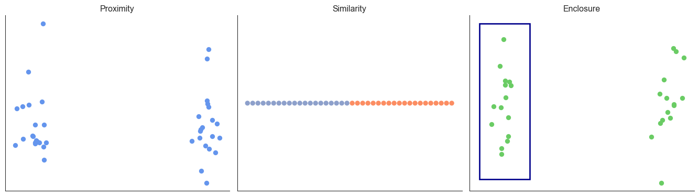

Principles of Perception in Data Visualization
We extensively rely on visuals to perceive the world around us. However, our visual perception is not as truthful as you might think. It can be easily misled or manipulated if we are not aware of the inherent biases in how we see.
Let us start with making specific about “perceptions”:
- Color perception: how we perceive color
- Form perception: how we perceive shape, structure, and magnitude
- Attention perception: how we perceive attention and focus
We will cover each of these in detail in the following sections.
1 Color perception
Color is one of the most powerful tools in data visualization, but it is also one of the most complex. Our perception of color is not absolute; it is contextual and subjective.
1.1 Color is contextual
Our visual system tries to maintain color constancy, meaning we perceive a familiar object as being a consistent color regardless of the lighting conditions. This is why we recognize a banana as yellow whether it’s in bright sunlight or in a dim room. However, this helpful adaptation can create peculiar biases in unfamiliar contexts.

The infamous “dress” illusion highlights how our brain makes assumptions about lighting, causing some people to see the dress as blue and black (in bright light) and others as white and gold (in shadow). The colors are physically the same, but our perception of them is not.
Take another example below:

This happens because what we “see” is not just the raw wavelength of light hitting our eyes. Our visual cortex processes that raw signal, making inferences based on context and prior experience. For example, we perceive the leaves of a tree as green, even in a photograph made entirely of red, black, and white pixels, because our brain “knows” trees are green.
1.2 Encoding colors objectively
Color is a physical phenomenon. It is the result of electromagnetic waves within a certain range of wavelengths, which our eyes and brain interpret as “color.”
Most of what we see in the world is not pure spectral (single-wavelength) color, but rather mixtures of different wavelengths. Our eyes have three types of color receptors (cones) sensitive to different, overlapping ranges of wavelengths. When light of various wavelengths enters our eyes, the combination of signals from these cones is interpreted by our brain as a specific color sensation.
Because of this, we can represent an enormous range of colors simply by mixing a small set of primary colors. For screens and digital work, these are Red, Green, and Blue (the RGB model). By varying the intensity of each, we can mimic the effect of almost any color found in nature. This is called additive color mixing, because we’re combining different wavelengths of light.
Conversely, in printing (where we start with white paper and “take away” light with inks), we use the CMY (Cyan, Magenta, Yellow) system, where inks subtract some wavelengths and leave others. Mixing these subtractively produces the desired color on paper.

Another color model that is more intuitive for designing color palettes is the HSL (Hue, Saturation, Lightness) model. It is designed to match how humans naturally think about and describe color. Hue is the pure color, Saturation is the intensity, and Lightness/Value is the brightness.

Accessibility Matters: Designing for Color Blindness
When choosing colors, it is essential to make your visualizations accessible to everyone, including the significant portion of the population with color vision deficiencies (CVD), which affects about 8% of men and 0.5% of women. Avoid relying on red-green contrasts, as this is the most problematic pair for those with CVD. Instead, use perceptually uniform palettes—such as those available from tools like ColorBrewer—and always combine color with other cues like shape, patterns, or direct labels to ensure that important information is conveyed clearly to all viewers.
1.3 Perceptually uniform palettes
A perceptually uniform colormap is one where equal steps in the data are perceived as equal steps in color. The common “rainbow” (or “jet”) colormap fails at this because its brightness changes non-uniformly, creating false boundaries and hiding details. Palettes like viridis, plasma, inferno, magma, and cividis were engineered to have a monotonically increasing luminance, making them accurate, intuitive, and accessible.
See also the following paper for more details:

This is a video about the story behind how the perceptually uniform palettes were created.
2 The Perception of Form and Quantity
Beyond color, we must consider how we perceive shape, structure, and magnitude.
Grouping and Structure: The Gestalt Principles

Our brains have an innate tendency to organize visual elements into patterns and unified wholes, a phenomenon described by the Gestalt principles. These principles explain how we instinctively group objects based on characteristics such as proximity, similarity, enclosure, continuity, closure, and the distinction between figure and ground. In the context of data visualization, understanding these principles is crucial for designing graphics that are both clear and insightful.
For example, the principle of proximity suggests that elements placed close together are perceived as belonging to the same group. The principle of similarity indicates that items sharing visual properties (such as color, shape, or size) are seen as part of the same group. Enclosure uses shapes, borders, or backgrounds to visually bound elements together.
Below is a Python script that demonstrates these Gestalt principles using scatter plots:
By applying Gestalt principles thoughtfully in our visualizations, we help users interpret complex information quickly and accurately. These design choices guide attention, clarify relationships, emphasize key patterns or outliers, and ultimately make our data stories more compelling and accessible.
Perceiving Quantity
Our ability to accurately judge quantities depends heavily on how information is visually encoded. Steven’s Power Law reveals that humans are most precise at estimating length, less accurate with area, and even worse with volume.

This has direct consequences for our choice of chart types. A good example is a bar chart. Both representations can represent the same data, but the preference is to use a bar chart when the data is ordinal or categorical. This is because a pie chart encodes values as angles and areas of slices, which our brains struggle to compare accurately—especially when the slices are similar in size. That’s why it’s often difficult to judge whether 23% or 27% is larger in a pie chart without checking the labels.

3 Preattentive attributes
Preattentive attributes are visual properties that our brains process in milliseconds, before we even pay conscious attention. By using them purposefully, you can control the visual hierarchy of your chart and tell a story.

Common attributes include a distinct color, size, shape, or orientation. The most effective way to use them is to de-emphasize the majority of your data (e.g., making it light grey) and use a single, strong attribute to highlight your key message. This “grey vs. red” technique immediately tells the viewer, “Look here! This is what matters.”

4 Summary
Effective visualizations harness our natural perceptions—such as color, size, shape, and orientation—to guide attention and reveal key patterns in data. By understanding and intentionally using these perceptual principles, you can create graphics that clearly communicate your message and make your data more memorable and accessible.